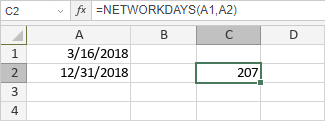

NETWORKDAYS funkcija
Funkcija NETWORKDAYS je jedna od funkcija za datum i vreme. Koristi se za izračunavanje broja radnih dana između dva datuma (početnog i krajnjeg), isključujući vikende i datume koji se smatraju praznicima.
Sintaksa
NETWORKDAYS(start_date, end_date, [holidays])
Funkcija NETWORKDAYS ima sledeći argument:
| Argument | Opis |
|---|---|
| start_date | Prvi datum perioda, unet pomoću funkcije DATE ili druge funkcije za datum i vreme. |
| end_date | Poslednji datum perioda, unet pomoću funkcije DATE ili druge funkcije za datum i vreme. |
| holidays | Opcioni argument koji određuje koji su datumi, pored vikenda, neradni. Možete ih uneti pomoću funkcije DATE ili druge funkcije za datum i vreme, ili navesti referencu na opseg ćelija koji sadrži datume. |
Napomene
Kako primeniti funkciju NETWORKDAYS.
Primeri
Slika ispod prikazuje rezultat koji vraća funkcija NETWORKDAYS.
